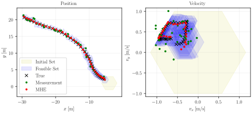
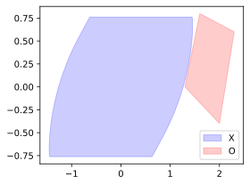

zonoopt documentation
ZonoOpt
This C++ library provides classes and tailored optimization routines for zonotopes, constrained zonotopes, and hybrid zonotopes.


Zonotopes, Constrained Zonotopes, and Hybrid Zonotopes
Zonotopes and their generalizations are set representations widely used for reachability analysis. A major advantage of these set representations when compared to alternatives such as halfspace representation (H-rep) or vertex representation (V-rep) polytopes is that they have efficient identities for many important set operations. This makes them well-suited to contexts where efficient online set computations are required, such as online safety verification and set-valued state estimation.
This library focuses specifically on zonotopes, constrained zonotopes, and hybrid zonotopes. A set $\mathcal{Z}$ is a zonotope if there exist a generator matrix $G$ and center vector $c$ such that
$$ \mathcal{Z} = \left\lbrace G \xi + c \; : \; \xi \in [-1, 1]^{nG} \right\rbrace \;. $$
Zonotopes represent centrally symmetric, convex polytopes.

A set $\mathcal{Z}_C$ is a constrained zonotope if there additionally exist a constraint matrix $A$ and constraint vector $b$ such that
$$ \mathcal{Z}_C = \left\lbrace G \xi + c \; : \; \xi \in [-1, 1]^{nG}, A \xi = b \right\rbrace \;. $$
Constrained zonotopes represent convex polytopes.

Hybrid zonotopes extend constrained zonotopes by allowing for a subset of the factors $\xi$ to be binary-valued, i.e., $\xi = [\xi_c \quad \xi_b]^T$ where $\xi_c \in [-1, 1]^{nGc}$ and $\xi_b \in \lbrace -1, 1 \rbrace^{nGb}$. A set $\mathcal{Z}_H$ is then a hybrid zonotope if there exist generator matrices $G_c$ and $G_b$, center $c$, and constraint matrices $A_c$ and $A_b$, and constraint vector $b$ such that
$$ \mathcal{Z}_H = \left\lbrace \begin{bmatrix} G_c & G_b \end{bmatrix} \begin{bmatrix} \xi_c \ \xi_b \end{bmatrix} + c \; : \; \begin{matrix} \xi_c \in [-1, 1]^{nGc},\; \xi_b \in \lbrace -1, 1 \rbrace^{nGb}, \ \begin{bmatrix} A_c & A_b \end{bmatrix} \begin{bmatrix} \xi_c \ \xi_b \end{bmatrix} = b \end{matrix} \right\rbrace \;. $$
Hybrid zonotopes represent unions of non-convex polytopes.

ZonoOpt Features
The ZonoOpt library provides classes and set operations for zonotopes, constrained zonotopes, and hybrid zonotopes. For cases where numerical optimization is required, e.g., checking if a set is empty or solving an MPC problem where the constraints are represented as a zonotopic set, custom optimization routines are utilized. Some key features of the ZonoOpt library are as follows:
All classes and methods are implemented using sparse linear algebra via the Eigen library.
ZonoOpt has no external dependencies beyond Eigen, making it easy to integrate into robotics projects using C++ or Python.
Polymorphism is used to provide a common interface for zonotopes, constrained zonotopes, and hybrid zonotopes while allowing for specialized implementations.
E.g.,
supportis more efficient for zonotopes than for constrained zonotopes.
Factors are flexibly defined as either $[\xi_c \quad \xi_b]^T \in [0,1]^{nGc} \times \lbrace 0,1 \rbrace^{nGb}$ or the more standard form $[\xi_c \quad \xi_b]^T \in [-1,1]^{nGc} \times \lbrace -1,1 \rbrace^{nGb}$ to facilitate certain set operations.
Basic interval arithmetic is provided via the
IntervalandBoxclasses.
Building and Installing
Python bindings can be installed from PyPI with pip install zonoopt. To build the bindings from source, use pip install .. Note that a C++ compiler is required to build from source.
This library can be used in CMake projects either via add_subdirectory or by installing the library.
Including the library via add_subdirectory is recommended when possible as it permits more aggressive CPU optimizations (i.e., -march=native).
When building the library for installation, you must set the option ZONOOPT_INSTALL to ON, i.e., cmake -DZONOOPT_INSTALL=ON -S . -B build.
Example CMake usage is as follows:
cmake_minimum_required(VERSION 3.15...3.27)
project(your_project)
add_executable(your_project
your_project.cpp
)
# Using add_subdirectory
add_subdirectory(ZonoOpt)
# If installed, find the package instead
# find_package(ZonoOpt REQUIRED)
target_link_libraries(your_project PRIVATE ZonoOpt)
Examples
Consider the case that we wish to compute the robust forward reachable set of a discrete time double integrator system and verify that it does not intersect an unsafe set. We may do this in Python as follows:
import zonoopt as zono
import numpy as np
import matplotlib.pyplot as plt
# System dynamics
dt = 0.1
A = np.array([[1., dt],
[0., 1.]])
B = np.array([[0.5*dt**2],
[dt]])
# Initial set: box [-1.0, 1.0] x [-0.1, 0.1]
X0 = zono.interval_2_zono(zono.Box([-1., -0.1], [1., 0.1]))
# Input set: box [-0.2, 0.2]
U = zono.interval_2_zono(zono.Box([-0.2], [0.2]))
# Disturbance set: affine map of octagon
W = zono.make_regular_zono_2D(radius=1., n_sides=8)
W = zono.affine_map(W, np.diag([0.01, 0.05]))
# Compute reachable set over 10 time steps
X = X0
for k in range(10):
X = zono.affine_map(X, A)
X = zono.minkowski_sum(X, zono.affine_map(U, B))
X = zono.minkowski_sum(X, W)
# Unsafe set
O = zono.vrep_2_conzono(np.array([[1.3, 0.],
[1.6, 0.8],
[2.0, -0.4],
[2.3, 0.6]]))
# Check for intersection with unsafe set
print(f'10-step reachable set intersects unsafe set: {not zono.intersection(X, O).is_empty()}')
# Plot the final reachable set
fig, ax = plt.subplots(figsize=(4, 3), layout='tight')
h = []
h.append(zono.plot(X, ax=ax, color='b', alpha=0.2)[0])
h.append(zono.plot(O, ax=ax, color='r', alpha=0.2)[0])
ax.legend(h, ['X', 'O'])
plt.show()

Equivalently, these calculations can be performed in C++ as follows:
#include "ZonoOpt.hpp"
#include "Eigen/Dense"
#include "Eigen/Sparse"
#include <iostream>
int main()
{
// System dynamics
double dt = 0.1;
Eigen::Matrix<double, 2, 2> A;
A << 1, dt,
0, 1;
Eigen::Matrix<double, 2, 1> B;
B << 0.5*dt*dt,
dt;
// Initial set: box [-1.0, 1.0] x [-0.1, 0.1]
Eigen::Vector2d x0_min, x0_max;
x0_min << -1.0, -0.1;
x0_max << 1.0, 0.1;
ZonoOpt::ZonoPtr X0 = ZonoOpt::interval_2_zono(ZonoOpt::Box(x0_min, x0_max));
// Input set: box [-0.2, 0.2]
Eigen::Vector<double, 1> u_min, u_max;
u_min << -0.2;
u_max << 0.2;
ZonoOpt::ZonoPtr U = ZonoOpt::interval_2_zono(ZonoOpt::Box(u_min, u_max));
// Disturbance set: affine map of octagon
ZonoOpt::ZonoPtr W = ZonoOpt::make_regular_zono_2D(1.0, 8);
Eigen::SparseMatrix<double> W_map(2, 2);
W_map.insert(0, 0) = 0.01;
W_map.insert(1, 1) = 0.05;
W = ZonoOpt::affine_map(*W, W_map);
// Compute reachable set over 10 time steps
ZonoOpt::ZonoPtr X = std::move(X0);
for (int k=0; k<10; ++k)
{
X = ZonoOpt::affine_map(*X, A.sparseView());
X = ZonoOpt::minkowski_sum(*X, *ZonoOpt::affine_map(*U, B.sparseView()));
X = ZonoOpt::minkowski_sum(*X, *W);
}
// Unsafe set
Eigen::Matrix<double, 4, 2> verts;
verts << 1.3, 0.0,
1.6, 0.8,
2.0, -0.4,
2.3, 0.6;
ZonoOpt::ZonoPtr O = ZonoOpt::vrep_2_conzono(verts);
// Check for intersection with unsafe set
std::cout << "10-step reachable set intersects unsafe set: "
<< (!ZonoOpt::intersection(*X, *O)->is_empty() ? "true" : "false") << std::endl;
return 0;
}
Further Python examples are located in examples, and a C++ example is located in test.
Documentation
Auto-generated API documentation is available below.
References
More information about ZonoOpt can be found in the following publication. Please cite this if you publish work based on ZonoOpt: Robbins, J.A., Siefert, J.A., and Pangborn, H.C., “Sparsity-Promoting Reachability Analysis and Optimization of Constrained Zonotopes,” 2025. https://arxiv.org/abs/2504.03885.
See Also
For MATLAB users, zonoLAB provides classes and set operations for zonotopes, constrained zonotopes, and hybrid zonotopes.
Contents:
- ZonoOpt Module
BoxConZonoEmptySetHybZonoIneqTermIneqTypeInequalityIntervalOptSettingsOptSolutionPointZonoaffine_map()cartesian_product()constrain()get_vertices()halfspace_intersection()intersection()intersection_over_dims()interval_2_zono()make_regular_zono_2D()minkowski_sum()plot()pontry_diff()project_onto_dims()set_diff()union_of_many()vrep_2_conzono()vrep_2_hybzono()zono_union_2_hybzono()